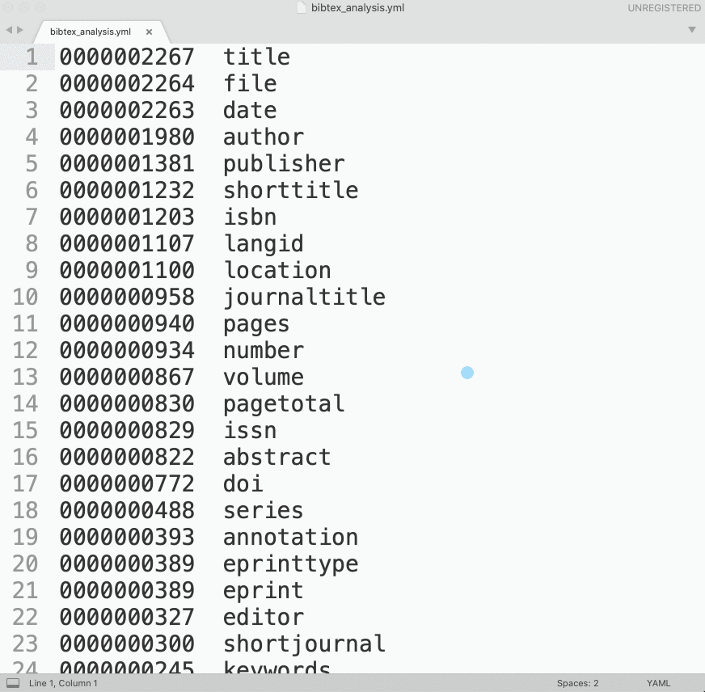

7 Lesson 6
look at the file
create a holder for our data, which will be
dictionary(dic, list, etc.)- read as one big string
- split into records using
\n@- we will get a list of strings
- loop through all the records:
NB: each records is a string that needs to be converted into something else.
- we need to split each record using
,\n - now we loop through the list of “key-value” pairs
- type&citationkey element:
- grab list element with index 0 (
citationkey = record[0]) - split the element on
{- recordType = element[0]
- citationKey = element[1]
- grab list element with index 0 (
- add a record into our
dictionaryusing citationKey as a key value - add recordType into the newly created record
- process the rest of the record:
- loop through the record, starting with 1:
for r in record[1:]:
- split every element on
=- key = element[0].strip()
- value = element[1].strip()
- add our key-value pair into the
dictionary
- loop through the record, starting with 1:
- we need to split each record using
Next part: save dictionary into: CSV, JSON, YAML
7.0.1 Scripts
Script 1: analyzing bibTex data (z_1_preliminary.py)
import os, yaml
###########################################################
# VARIABLES ###############################################
###########################################################
settingsFile = "z_config.yml"
vars = yaml.load(open(settingsFile))
###########################################################
# FUNCTIONS ###############################################
###########################################################
# analyze bibTeX data; identify what needs to be fixed
def bibAnalyze(bibTexFile):
tempDic = {}
with open(bibTexFile, "r", encoding="utf8") as f1:
records = f1.read()
records = records.split("\n@")
for record in records[1:]:
# let process ONLY those records that have PDFs
if ".pdf" in record.lower():
record = record.strip()
record = record.split("\n")[:-1]
for r in record[1:]:
r = r.split("=")[0].strip()
if r in tempDic:
tempDic[r] += 1
else:
tempDic[r] = 1
results = []
for k,v in tempDic.items():
result = "%010d\t%s" % (v, k)
results.append(result)
results = sorted(results, reverse=True)
results = "\n".join(results)
with open("bibtex_analysis.txt", "w", encoding="utf8") as f9:
f9.write(results)
bibAnalyze(vars['bib_all'])This script will create the file bibtex_analysis.txt, which will be a frequency list of keys from all bibTeX records. We would want to convert this frequency list into a YML file which we can then load with yaml library (make sure to install it!). Loading yml data into a python dictionary is as easy as: dictionary = yaml.load(open(fileNameYml)).
You can convert the frequency list into a proper yml file using regular expressions:

Script 2: loading bibTeX data and converting to other formats (z_2_conversion_simple.py)
import re
import yaml
"""
1. load bibtex file
- bibliography should be curated in Zotero (one can program cleaning procedures into the script, but this is not as reliable);
- loading bibtex data, keep only those records that have PDFs;
- some processing might be necessary (like picking one file out of two and more)
2. convert into other formats
- csv
- json
- yml
"""
###########################################################
# VARIABLES ###############################################
###########################################################
settingsFile = "z_config.yml"
settings = yaml.load(open(settingsFile))
bibKeys = yaml.load(open("zotero_biblatex_keys.yml"))
###########################################################
# FUNCTIONS ###############################################
###########################################################
# load bibTex Data into a dictionary
def bibLoad(bibTexFile):
bibDic = {}
with open(bibTexFile, "r", encoding="utf8") as f1:
records = f1.read().split("\n@")
for record in records[1:]:
# let process ONLY those records that have PDFs
if ".pdf" in record.lower():
record = record.strip().split("\n")[:-1]
rType = record[0].split("{")[0].strip()
rCite = record[0].split("{")[1].strip().replace(",", "")
bibDic[rCite] = {}
bibDic[rCite]["rCite"] = rCite
bibDic[rCite]["rType"] = rType
for r in record[1:]:
key = r.split("=")[0].strip()
val = r.split("=")[1].strip()
val = re.sub("^\{|\},?", "", val)
fixedKey = bibKeys[key]
bibDic[rCite][fixedKey] = val
print("="*80)
print("NUMBER OF RECORDS IN BIBLIGORAPHY: %d" % len(bibDic))
print("="*80)
return(bibDic)
###########################################################
# CONVERSION FUNCTIONS ####################################
###########################################################
import json
def convertToJSON(bibTexFile):
data = bibLoad(bibTexFile)
with open(bibTexFile.replace(".bib", ".json"), 'w', encoding='utf8') as f9:
json.dump(data, f9, sort_keys=True, indent=4, ensure_ascii=False)
import yaml
def convertToYAML(bibTexFile):
data = bibLoad(bibTexFile)
with open(bibTexFile.replace(".bib", ".yaml"), 'w', encoding='utf8') as f9:
yaml.dump(data, f9)
# CSV is the trickest because bibTeX is not symmetrical
def convertToCSV(bibTexFile):
data = bibLoad(bibTexFile)
# let's handpick fields that we want to save: citeKey, type, author, title, date
headerList = ['citeKey', 'type', 'author', 'title', 'date']
header = "\t".join(headerList)
dataNew = [header]
for k,v in data.items():
citeKey = k
if 'rType' in v:
rType = v['rType']
else:
rType = "NA"
if 'author' in v:
author = v['author']
else:
author = "NA"
if 'title' in v:
title = v['title']
else:
title = "NA"
if 'date' in v:
date = v['date']
else:
date = "NA"
tempVal = "\t".join([citeKey, rType, author, title, date])
dataNew.append(tempVal)
finalData = "\n".join(dataNew)
with open(bibTexFile.replace(".bib", ".csv"), 'w', encoding='utf8') as f9:
f9.write(finalData)
###########################################################
# RUN EVERYTHING ##########################################
###########################################################
print(settings["bib_all"])
#convertToJSON(settings["bib_all"])
#convertToYAML(settings["bib_all"])
#convertToCSV(settings["bib_all"])
print("Done!")